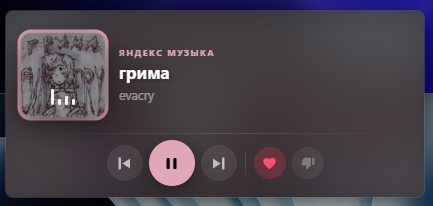

Компактный мини-плеер поверх всех окон, глобальные горячие клавиши и меню с твиками прямо внутри Яндекс Музыки — по тапу правого Shift, без отдельных окон и без сторонних серверов.
Один exe-инжектор, без установщика, без рекламы и без фонового сбора данных
Компактный виджет с обложкой, названием трека и управлением — закрепляется в любом из шести углов экрана и остаётся поверх всех окон.
Play/Pause, треки, лайк/дизлайк — назначаются прямо в меню и работают даже без фокуса окна Яндекс Музыки.
Тап правого Shift открывает панель прямо поверх страницы — плеер, твики и бинды в одном месте, без отдельного окна.
Клик отправляется напрямую в страницу через Chrome DevTools Protocol — переключаться на окно Яндекс Музыки не нужно.
8 переключателей, которые убирают рекламные плашки, лишние разделы меню, увеличивают обложку или скрывают имя профиля.
Forge — один exe: находит или запускает Яндекс Музыку, подключается и закрывается сам. Ничего не остаётся висеть в фоне отдельным процессом.
Технически — что именно запускается на вашем компьютере и как YMHub управляет Яндекс Музыкой без переключения окон
«Яндекс Музыка» на Windows — это Electron-приложение, то есть обычный Chromium
внутри. Forge.exe запускает или находит уже запущенную ЯМ и
внедряет в тот же процесс небольшую YMHubDll.dll, после чего сам
завершается — резидентного хост-процесса нет вообще. DLL не патчит и не
подменяет файлы самого приложения — если закрыть Яндекс Музыку, всё
исчезает вместе с ней, ничего не остаётся работать в фоне.
Лайки, дизлайки, плей/пауза и твики интерфейса не эмулируются нажатием
клавиш «в воздух» — DLL открывает локальное WebSocket-соединение к
встроенному --remote-debugging-port Chromium'а и отправляет
настоящие, доверенные события прямо в страницу (Input.dispatchMouseEvent,
Runtime.evaluate). Это тот же протокол, которым пользуются
сами DevTools браузера и инструменты вроде Puppeteer — никакого скрытого
API Яндекса здесь нет.
Мини-плеер, горячие клавиши, меню и твики — не отдельная программа,
а часть той же YMHubDll.dll, работающая внутри процесса Яндекс
Музыки. Синхронизировать состояние между процессами не нужно — раньше
так и было (отдельный хост + разделяемая память), но с переходом на
Forge отдельный резидентный процесс убрали целиком.
Большинство твиков — это CSS-правило (display:none или изменение
размера), которое DLL вписывает в один <style>-тег на
странице через тот же DevTools Protocol. Твик «Скрыть имя пользователя»
идёт дальше и подменяет текст напрямую в DOM — в том числе внутри
выпадающего меню профиля, которое Яндекс Музыка рисует через отдельный
встроенный iframe Яндекс Паспорта.
Горячие клавиши, включённые твики и положение мини-плеера сохраняются
в реестре, HKCU\Software\YMHub — обычной пользовательской
ветке, без прав администратора и без файлов конфигурации где-то ещё.
Forge проверяет свежие версии себя и YMHubDll.dll через
публичный GitHub Releases API и подтягивает новые файлы оттуда же —
никакого стороннего сервера обновлений. Отдельно: если DLL аварийно
завершится, она может (в фоне, без блокировки чего-либо) отправить
короткий лог и дамп краша на собственный сервер разработчика — это
разовая диагностика конкретно падения, а не постоянная телеметрия
или сбор статистики использования.
Исходный код полностью открыт — весь C++/WinAPI-код DLL и инжектора Forge лежит в открытых репозиториях на GitHub. Любой может собрать всё самостоятельно по инструкции в README и убедиться, что внутри нет ничего лишнего, либо доработать под себя.
Тап правого Shift — и панель уже открыта прямо поверх страницы, без переключения окон
Обложка, название и артист текущего трека, play/pause/prev/next, лайк и дизлайк — без переключения на окно Яндекс Музыки.
8 переключателей для интерфейса самой Яндекс Музыки — от скрытия рекламных плашек до увеличения обложки трека. Применяются сразу, без перезапуска приложения. Полный список — ниже.
Свои глобальные комбинации для показа/скрытия мини-плеера, треков, лайка/дизлайка и паузы — работают независимо от того, какое окно сейчас активно. Отдельно — переназначение встроенных клавиш самой Яндекс Музыки (играют только когда её окно в фокусе). Клик по кнопке — и следующее нажатие клавиш сразу становится новым биндом.
Каждый — отдельный переключатель на вкладке «Твики», применяется мгновенно и обратим
Убирает подсказку со искрой под плеером.
Отключает цветной волновой фон на странице «Моя волна».
Убирает кнопку с заметками о новой версии Яндекс Музыки.
Скрывает карточки плейлистов слева — плеер занимает всю ширину окна.
Скрывает «Для вас и Тренды», «Концерты», «Книги и подкасты» в навигации.
Убирает ссылку и плашку подписки рядом с именем профиля.
Увеличивает обложку на странице «Моя волна» и слегка сдвигает имя артиста, чтобы не перекрывалось.
Подменяет имя на своё или на «Скрыто» — и в сайдбаре, и в выпадающем меню профиля вместе с телефоном/логином.
Хотите больше, чем эти 8 переключателей? На той же вкладке есть поле «Свой CSS» для произвольных правил — если никогда не писали CSS, есть пошаговый гайд для новичков.
Меню открывается прямо поверх Яндекс Музыки — без отдельного окна

Тонкий инжектор — единственная программа, которую нужно скачать и запустить.
Он проверяет обновления, находит или запускает Яндекс Музыку, подключает
к ней YMHubDll.dll и сразу закрывается сам —
резидентно в фоне ничего не остаётся, вся дальнейшая работа (мини-плеер,
меню, твики) происходит уже внутри процесса самой Яндекс Музыки.
Внедрение DLL — единственный способ доверенно отправлять команды (лайк, плей/пауза, твики) внутрь Chromium-страницы Яндекс Музыки без эмуляции нажатий клавиш. DLL делает это через стандартный Chrome DevTools Protocol — тот же, которым пользуются обычные инструменты разработчика в браузере. Исходники открыты, можно проверить и собрать самостоятельно.
В обычной работе — нет: единственное регулярное сетевое обращение — проверка номера последнего релиза на GitHub и скачивание обновлённых файлов оттуда же. Исключение — если DLL аварийно завершится: тогда она может отправить короткий лог и дамп краша на сервер разработчика для отладки конкретно этого падения. Обычной аналитики, статистики использования или отслеживания действий — нет.
Нет. Forge и DLL запускаются из-под обычного пользователя, настройки хранятся
в пользовательской ветке реестра HKCU, установщика нет вообще —
Forge — один портативный exe.
Нет, YMHub — независимый проект энтузиаста, никак не аффилированный с «Яндексом». Использование — на ваш риск, как и с любым сторонним инструментом для официального приложения.
При каждом запуске Forge сам проверяет свежие релизы — и свои, и
YMHubDll.dll — и подтягивает новые файлы с GitHub
перед тем, как подключиться к Яндекс Музыке. Вручную скачивать
обновления не нужно, достаточно запускать Forge как обычно.